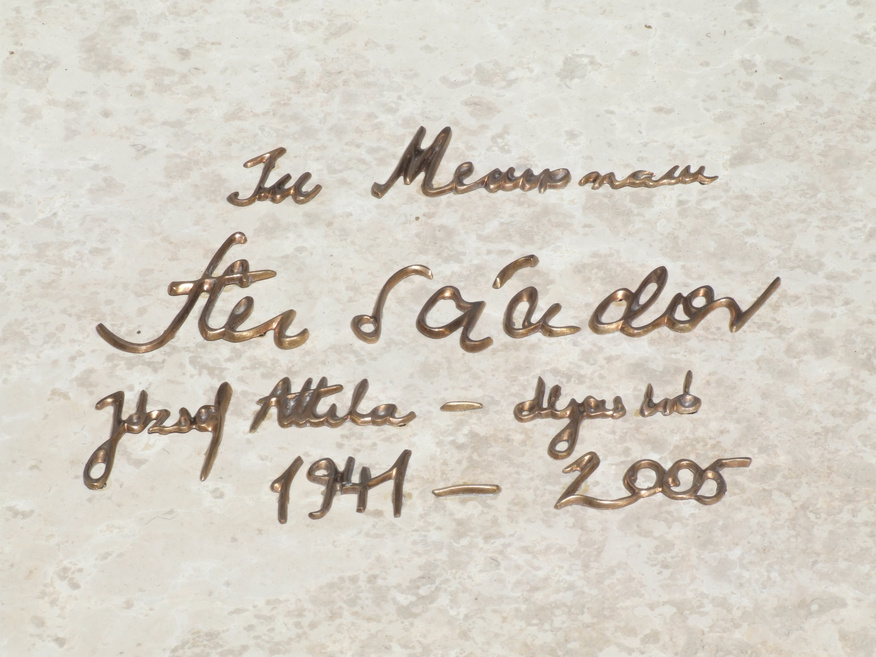
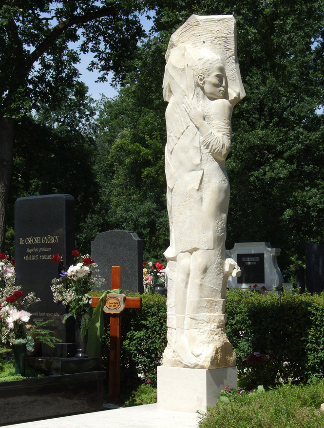
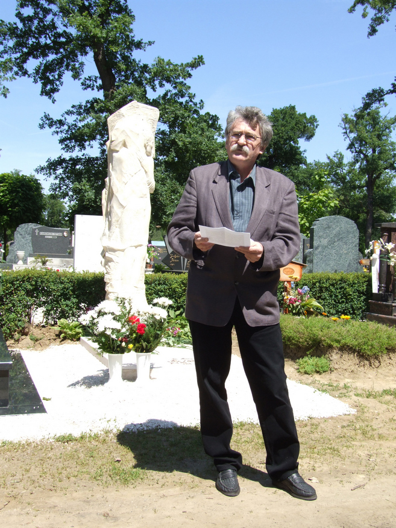
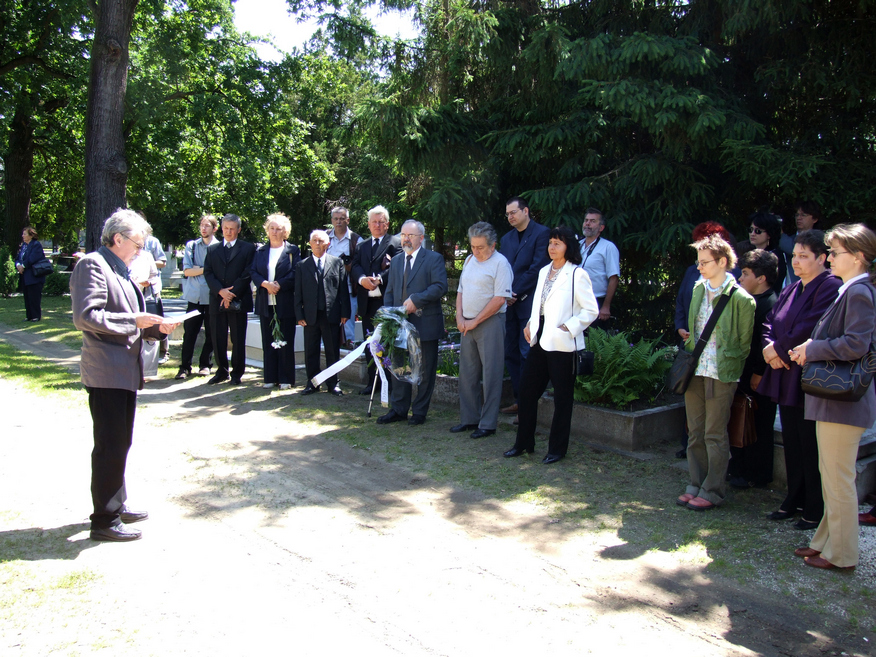
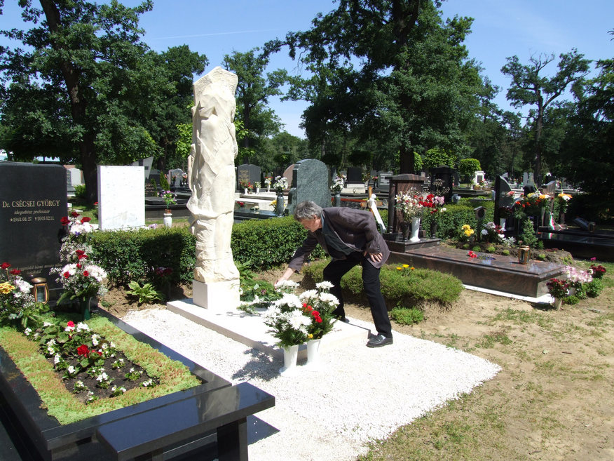
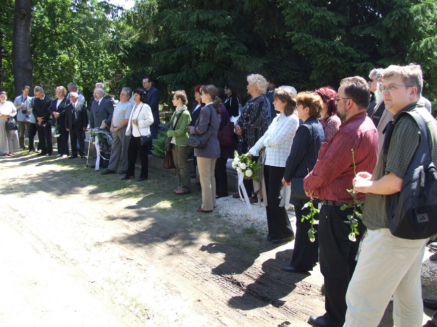
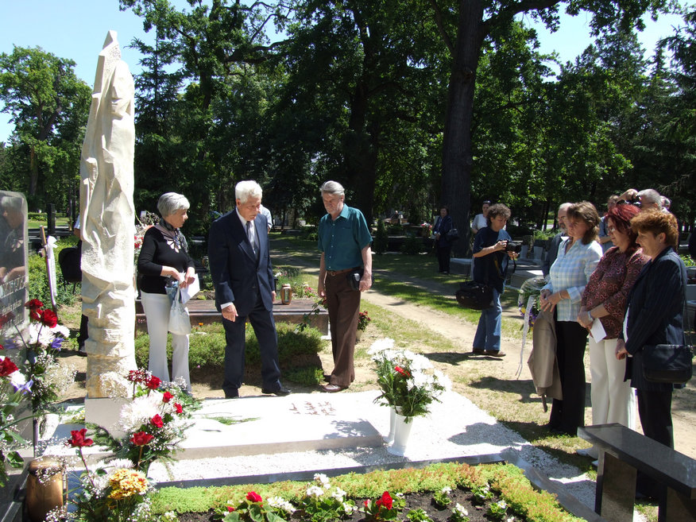
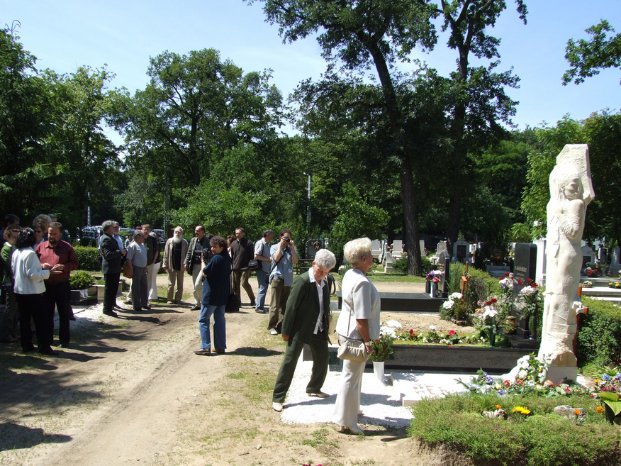
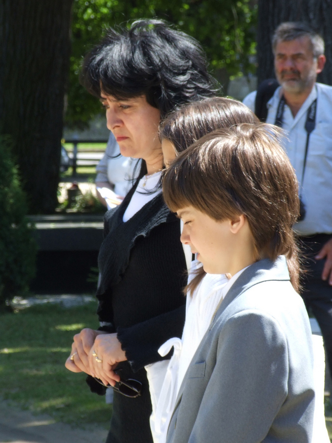

<!DOCTYPE html>
<html lang="en">
  <head>
    <meta charset="UTF-8" />
    <meta name="viewport" content="width=device-width, initial-scale=1.0" />
    <meta http-equiv="X-UA-Compatible" content="ie=edge" />
    <meta
      name="description"
      content="A Debreceni Irodalom Háza honlapja Tar Sándor íróról."
    />
    <meta name="robots" content="index,follow" />
    <link rel="icon" href="../img/favicon.ico" />
    <link rel="stylesheet" href="../styles/style.css" />
    <link rel="stylesheet" href="https://cdnjs.cloudflare.com/ajax/libs/font-awesome/5.15.2/css/all.min.css">
    <link rel="preconnect" href="https://fonts.gstatic.com">
    <link href="https://fonts.googleapis.com/css2?family=Kelly+Slab&display=swap" rel="stylesheet"> 
    <link rel="preconnect" href="https://fonts.gstatic.com">
<link href="https://fonts.googleapis.com/css2?family=Play&display=swap" rel="stylesheet"> 
    <title>Tar Sándor | Fotók</title>
  </head>
</html>
</head>
<body>
  
  <header class="main-head">
    
    <nav>
      <div id="logo">
        <a href="../index.html"> 
  
  
          
        </a>
      </div>
      <ul id="main-nav">
        <li><a id="underline" href="../eletut/index.html">Életút</a></li>
        <li><a id="underline" href="../muvek/muvek-main.html">Művek</a></li>
        <li><a class="current" href="../gallery/index.html">Fotók</a></li>
        <li><a id="underline" href="../hanganyagok/index.html">Hanganyagok</a></li>
        <li><a id="underline" href="../tarrol/tarrol.html">T.S.-ról</a></li>
      </ul>

       <!-- Burger nav-------------------------------->

          
 <div class="burger-container">
  <nav class="navbar">
      <ul class="nav-links">
          <li><a href="../eletut/index.html"">Életút</a></li>
          <li><a href="../muvek/muvek-main.html">Művek</a></li>
          <li><a href="../gallery/index.html">Fotók</a></li>
          <li><a href="../hanganyagok/index.html">Hanganyagok</a></li>
          <li><a href="../tarrol/tarrol.html">T.S.-ról</a></li>
          <li><a href="../impresszum.html">Impresszum</a></li>

        
      </ul>
      <i class="fas fa-bars fa-2x" id="burger"></i>
  </nav>
  
</div>


<!-- Burger nav end--------------------------->
    </nav>
    
  </header>

  <main style="min-height: 73vh;">
    
      <section class="gallerysection">
      
        <div class="gallery">
            <div class="gallery-item item-3x4">
                
                <div class="caption"><span>Síremlékavatás 1 (2006)</span></div>
            </div>
    
            <div class="gallery-item item-3x4">
                
                <div class="caption"><span>Turi Gábor, Simon Zoltán, Lakner Lajos</span></div>
            </div>
    
            <div class="gallery-item item-4x3">
                
                <div class="caption"><span>Síremlék - kibontakozni nem tudó angyal</span></div>
            </div>
    
            <div class="gallery-item item-4x3">
                
                <div class="caption"><span>Aczél Géza síremlékavató beszéde 1</span></div>
            </div>
            <div class="gallery-item item-3x4">
                
                <div class="caption"><span>Aczél Géza síremlékavató beszéde 2</span></div>
            </div>
            <div class="gallery-item item-3x4">
              
              <div class="caption"><span>Síremlékavatás 2 (2006)</span></div>
          </div>
          <div class="gallery-item item-3x4">
            
            <div class="caption"><span>Síremlékavatás 3 (2006)</span></div>
        </div>
        <div class="gallery-item item-3x4">
            
            <div class="caption"><span>Síremlékavatás 4 (2006)</span></div>
        </div>

        <div class="gallery-item item-3x4">
          
          <div class="caption"><span>Síremlékavatás 5 (2006)</span></div>
      </div>
      <div class="gallery-item item-4x3">
        
        <div class="caption"><span>Tar Sándor testvére, Pályiné Tar Ilona</span></div>
    </div>
      <div class="gallery-item item-4x3">
        
        <div class="caption"><span>Tar Sándor testvérének családja</span></div>
    </div>
    
        </div>
      </section>
    
  </main>
  <footer>
    <div class="footer-make">
      <p>
        Készült Debrecenben ©2021  |  &#169 <a target="_blank" href="https://www.derimuzeum.hu/irodalomhaza/">Debreceni Irodalom Háza,</a> <a target="_blank" href="https://www.derimuzeum.hu/">Déri Múzeum</a>  
      </p>
    </div>
    <div class="footer-menu">
      <a href="../impresszum.html">Impresszum</a>
      <a href="#">Adatvédelmi tájékoztató</a>

    </div>
  </footer>
  <script src="https://cdnjs.cloudflare.com/ajax/libs/jquery/2.1.3/jquery.min.js"></script>
  <script src="./script.js"></script>
  <script src="../burgermenu.js"></script>
</body>
</html>
